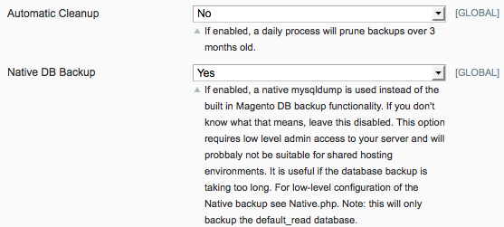

We now have over 300 downloads of our Magento Cloud Backup extension, with users storing over 300GB of their store data safe offsite using Amazon S3. As we near a post-beta release I thought it might be worth announcing an early RC, for both initial feedback from other developers/admins and because some of the features in this RC have been asked for, and I’d like to allow those users to gain early access to features they need.
What’s new in CloudBackup?

Auto-cleanup of old backups
Probably the single biggest feature request is the ability to delete old backups automatically. I have implemented a simple, delete backups older than 3 months process. However if you want more or less backup storage, it’s easy to change like so:
Edit Backup.php and change private $NUM_MONTHS = 3; on line 31 to your desired number of months.
(I’ll probably make this a fully fledged configuration option for the actual RC when it goes live on Magento Connect.)
You need to enable the setting as shown in the screenshot above. Once enabled a nightly cron job will look for backups that are older than the specified threshold, and delete them from S3.
Native Database backup support
This is a MySQL only, power-user only feature that allows you to skip the Core backup if it takes too long on large stores (>2GB of database data).
It’s important to note a couple of things with regard to running native Database backups. The first is that while it’s running the mysqldump will take a lock over the database, for really really big databases that could be a problem as it may block checkouts/new accounts, for example.
The second is that mysqldump is run via a system() call this means you need security setting on PHP to allow this. It also means the mysqldump binary needs to be accessible to the PHP webserver user. To help that I have added a simple variable in Native.php (the native equivalent to Db.php provided in Magento core).
I’ll just let the code/comments do the talking with regard to configuration:
// if mysqldump binary is not on the webserver user's path private $PATH_TO_MYSQLDUMP = ""; // For example on a MAMP based OSX install you might use: // private $PATH_TO_MYSQLDUMP = "/Applications/MAMP/Library/bin/"; |
This feature should really only be used by people who see it and think ‘great the answer to my prayers’ anybody else is likely to get themselves in to difficulty – it requires fairly deep access to your server environment – For example; if you’re on GoDaddy hosting, I’d be very surprised if you could run a native backup from PHP!
Trying the new features
You can get early access to the code over at Github, we’re using Github pages, it’s really quite a nice feature.
Once you have the code, you can install it manually in whatever manner you like, here’s some suggestions I wrote up a while back.
If you’re patient, I’ll have the RC release up on Magento Connect within the next few weeks. It needs a little more polishing before I’ll be happy with it though.
The End of the Beta Program
We’ve been running the beta program for over 12 months and I consider it a great success from a technical point of view – the software has matured gradually and with plenty of testers I feel comfortable about the quality of the backups being created, and the consistency with which they’re being made. It probably doesn’t take much business savvy though, to realize that with 300 downloads, and a bit over 300GB of data in a first-GB-of-data-free beta program, we’ve been shouldering quite a burden for everyone’s backup storage.
As I’ve said before, we would never take anything away from those that have been helping us test, so I’d assure everyone upfront that the initial GB of free storage will remain for those already using the extension. What will most likely happen once the extension is released as a 1.0 stable, is the extension will cost some small amount to buy, or the first GB won’t be completely subsidized. I’ll be sure to update everyone once we are clear on which direction the extension will go.
Anyone who has had a beer with me and endured my rant about the folly of selling not-scarce digital copies of things (including software) will know where I stand philosophically on the matter.
In any case, if you are considering offsite backups for your Magento store, or your client’s – now would be a pretty good time to jump on the bandwagon.
So that’s pretty much the update on our Magento Cloud Backup extension, if you have any questions/gripes, please don’t hesitate to comment below!
Hi! Great job on the extension. I was wondering if you have any release date planned? It seems to me that a nice feature (or maybe I dont know how to) is to actually see the backup files when you login to your AWS Manager at Amazon…
Thanks!
I wish! Sadly Amazon/AWS have some security thing where private buckets that you make cannot interact with the devpay buckets that our extension makes and vice versa. It’s probably to protect your buckets from our code doing bad things (not that it does!), but it confuses our users that are familiar with S3.